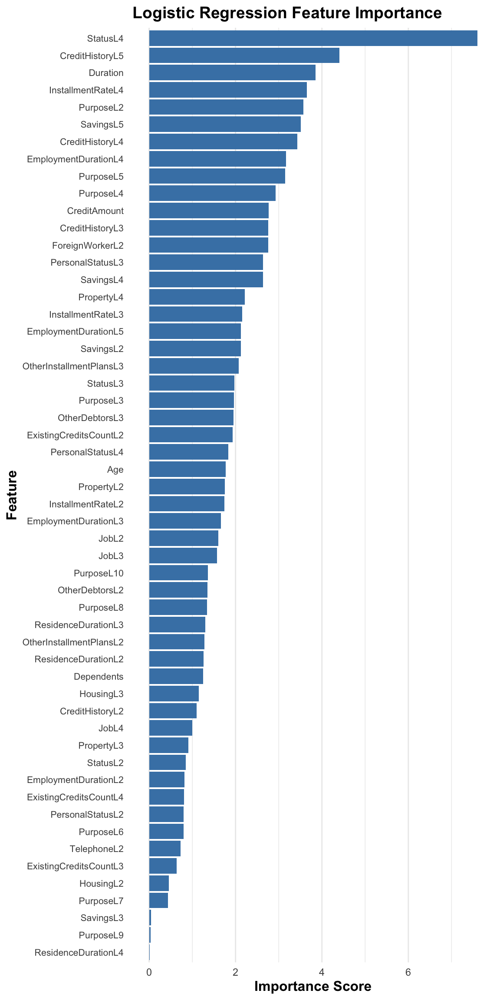

Code
train_data <- readRDS("train_data.rds")
test_data <- readRDS("test_data.rds")
model_weights <- ifelse(train_data$CreditRisk == "Bad",
sum(train_data$CreditRisk == "Good")/sum(train_data$CreditRisk == "Bad"),
1)
lr_model <- glm(CreditRisk ~ .,
data = train_data,
family = binomial,
weights = model_weights)
summary(lr_model)
car::vif(lr_model)
library(caret)
library(tibble)
library(dplyr)
library(ggplot2)
lr_importance <- varImp(lr_model)
imp_df <- lr_importance %>%
rownames_to_column("Feature") %>%
rename(Importance = Overall)
ggplot(imp_df, aes(x = Importance, y = reorder(Feature, Importance))) +
geom_col(fill = "steelblue") +
labs(
title = "Logistic Regression Feature Importance",
x = "Importance Score",
y = "Feature"
) +
theme_minimal() +
theme(
plot.title = element_text(size = 14, face = "bold"),
axis.title = element_text(size = 12, face = "bold"),
axis.text.y = element_text(size = 8, margin = margin(r = 5)),
panel.grid.major.y = element_blank()
)